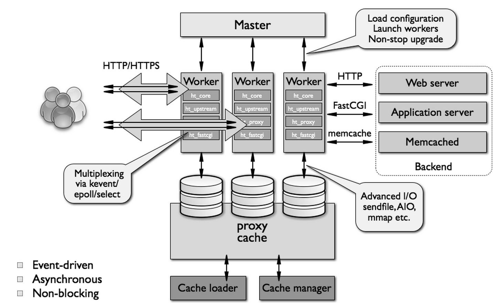
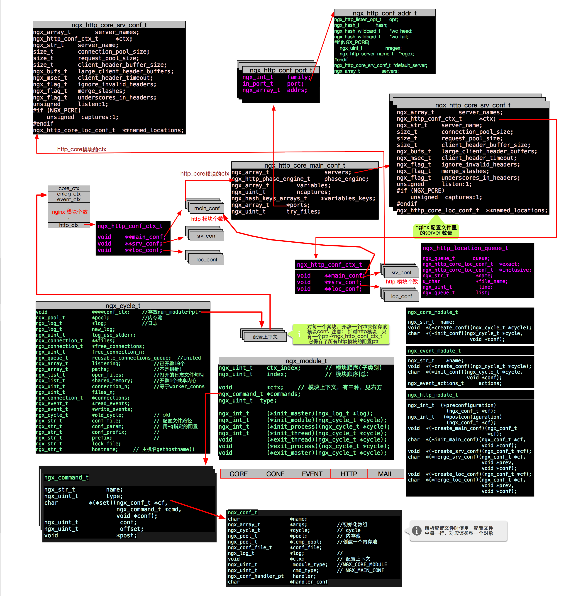
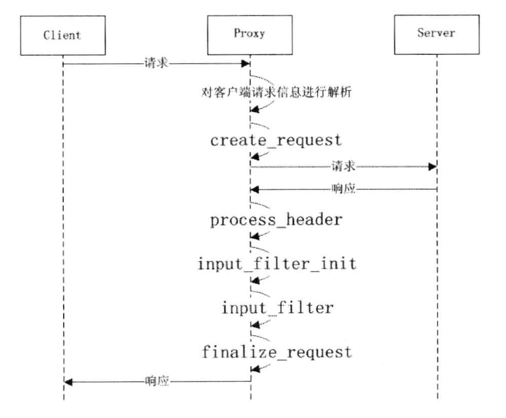

implement¶
configure script¶
The configure script is a bash script which in charge of generating 3 important file:
- ngx_auto_headers.h
- ngx_auto_config.h
- Makefile
Those files are used in compiled. The configure script generating code by checking compile environment and parsing configure arguments. For example:
ngx_feature="/dev/poll"
ngx_feature_name="NGX_HAVE_DEVPOLL"
ngx_feature_run=no
ngx_feature_incs="#include <sys/devpoll.h>"
ngx_feature_path=
ngx_feature_libs=
ngx_feature_test="int n, dp; struct dvpoll dvp;
dp = 0;
dvp.dp_fds = NULL;
dvp.dp_nfds = 0;
dvp.dp_timeout = 0;
n = ioctl(dp, DP_POLL, &dvp);
if (n == -1) return 1"
. auto/feature
this pice checking /dev/poll feature. It generate a test.c file and compile it. If successed, it echo one preprocess
macro into auto_headers.h
Architecture¶
nginx 把一个Http请求的处理，分为若干个步骤, 按处理顺序如下:
| 步骤 | 模块/命令 | hander |
|---|---|---|
| server selection (*) | listen, server_name | |
| NGX_HTTP_POST_READ_PHASE | HttpRealIpModule (第三方) | |
| NGX_HTTP_SERVER_REWRITE_PHASE | rewrite | ngx_http_rewrite_handler (rewrite) |
| NGX_HTTP_FIND_CONFIG_PHASE (*) | location | |
| NGX_HTTP_REWRITE_PHASE | rewrite | ngx_http_rewrite_handler (rewrite) |
| NGX_HTTP_POST_REWRITE_PHASE (*) | ||
| NGX_HTTP_PREACCESS_PHASE | degradation, limit_zone, limit req, HttpRealIpModule | ngx_http_limit_conn_handler (limit_conn) ngx_http_limit_req_handler (limit_req) |
| NGX_HTTP_ACCESS_PHASE | allow, deny, auth_basic | ngx_http_auth_basic_handler (auth_base) ngx_http_access_handler (access) |
| NGX_HTTP_POST_ACCESS_PHASE (*) | ||
| NGX_HTTP_TRY_FILES_PHASE (*) | try_files | |
| NGX_HTTP_CONTENT_PHASE | autoindex, Core, DAV, EmptyGif, FastCGI, FLV, gzip_static, index, memcached, perl, proxy, random_index, scgi, stub_status, uwsgi | ngx_http_static_handler (static) ngx_http_autoindex_handler (autoindex) ngx_http_index_handler (index) |
| NGX_HTTP_LOG_PHASE | access_log | ngx_http_log_handler (log) |
Warning
其中每一个phase里每个handler的顺序是可能改变的， 由 ngx_module_t *ngx_modules 来定(auto configure 生成的)
modules¶
There are 5 type of modules:
- NGX_CORE_MODULE
- NGX_HTTP_MODULE
- NGX_CONF_MODULE
- NGX_EVENT_MODULE
- NGX_MAIL_MODULE
| 模块 | 类型 | idx | cmd | init master | init module | init process | init thread | exit thread | exit process | exit master | conf_context |
|---|---|---|---|---|---|---|---|---|---|---|---|
| core | CORE | 0 | Y | 链接 | |||||||
| errlog | CORE | 1 | Y | conf save in cycle | |||||||
| conf | CONF | 2 | Y | Y | |||||||
| events | CORE | 3 | Y | ||||||||
| event_core | EVENT | 4 | Y | Y | Y | 链接 | |||||
| epoll | EVENT | 5 | Y | 链接 | |||||||
| regex | CORE | 6 | Y | Y | 链接 | ||||||
| http | CORE | 7 | Y | 连接 | |||||||
| _core | HTTP | 8 | Y | 链接 | |||||||
| _log | HTTP | 9 | Y | 链接 | |||||||
| _upstream | HTTP | 10 | Y | 链接 | |||||||
| _static | HTTP | 11 | |||||||||
| _gzip_static | HTTP | 12 | Y | 链接 | |||||||
| _autoindex | HTTP | 13 | Y | 链接 | |||||||
| _index | HTTP | 14 | Y | 链接 | |||||||
| _auth_basic | HTTP | 15 | Y | 链接 | |||||||
| _access | HTTP | 16 | Y | ||||||||
| _limit_conn | HTTP | 17 | Y | ||||||||
| _limit_req | HTTP | 18 | Y | ||||||||
| _geo | HTTP | 19 | Y | ||||||||
| _map | HTTP | 20 | Y | ||||||||
| _split_clients | HTTP | 21 | Y | ||||||||
| _referer | HTTP | 22 | Y | ||||||||
| _rewrite | HTTP | 23 | Y | ||||||||
| _proxy | HTTP | 24 | Y | ||||||||
| _fastcgi | HTTP | 25 | Y | ||||||||
| _uwsgi | HTTP | 26 | Y | ||||||||
| _scgi | HTTP | 27 | Y | ||||||||
| _memcached | HTTP | 28 | Y | ||||||||
| _empty_gif | HTTP | 29 | Y | ||||||||
| _browser | HTTP | 30 | Y | ||||||||
| _upstream_ip_hash | HTTP | 31 | Y | ||||||||
| _upstream_least_conn | HTTP | 32 | Y | ||||||||
| _upstream_keepalive | HTTP | 33 | Y | ||||||||
| _stub_status | HTTP | 34 | Y | ||||||||
| _write_filter | HTTP | 35 | |||||||||
| _header_filter | HTTP | 36 | |||||||||
| _chunked_filter | HTTP | 37 | |||||||||
| _range_header_filter | HTTP | 38 | |||||||||
| _gzip_filter | HTTP | 39 | Y | ||||||||
| _postpone_filter | HTTP | 40 | |||||||||
| _ssi_filter | HTTP | 41 | Y | ||||||||
| _charset_filter | HTTP | 42 | Y | ||||||||
| _userid_filter | HTTP | 43 | Y | Y | |||||||
| _headers_filter | HTTP | 44 | Y | ||||||||
| _copy_filter | HTTP | 45 | Y | ||||||||
| _range_body_filter | HTTP | 46 | |||||||||
| _not_modified_filter | HTTP | 47 |
Tip
http 模块原本负责(联系全局模块和http协议模块， 实现http协议), 但目前实现http协议已经分离出来，为http_core模块。这样做 是因为将来nginx还要实现除了http之外的协议,如SPDY
upstream 模块¶
配置一个代理需要两部:
- 先定义一个upstream(如果就一台backend, 这步也可以省略)
- 在某个location里配置upstream
如下:
location / {
proxy_pass http://127.0.0.1;
}
如果一个location配置了转发, 那么他的context 会这样变化:
clcf->handler = ngx_http_proxy_handler
- 并且一个请求来的时候，会先检测它的handler是否为空，如果不为空，就调用handler然后直接返回(相当于交由backend处理). 但这个
交由backend处理, 就是各种upstream模块的工作了， 一个upstream模块需要实现7个回调函数
| 回调函数 | 函数功能 | upstream代理模块 |
|---|---|---|
| create_request | 根据nginx与后端服务器通信协议（比如HTTP、 Memcache），将客户端的HTTP请求信息转换为对 应的发送到后端服务器的真实请求。 | ngx_http_proxy_create_request 由于nginx与后端服务器通信 协议也为HTTP，所以直接拷贝客户端的请求头、请求体（如果有 ）到变量r->upstream->request_bufs内。 |
| process_header | 根据nginx与后端服务器通信协议，将后端服务 器返回的头部信息转换为对客户端响应的HTTP响 应头。 | ngx_http_proxy_process_status_line 此时后端服务器返回的 头部信息已经保存在变量r->upstream->buffer内，将这串字符 串解析为HTTP响应头存储到变量r->upstream->headers_in内。 |
| input_filter_init | 根据前面获得的后端服务器返回的头部信息， 为进一步处理后端服务器将返回的响应体做初 始准备工作。 | ngx_http_proxy_input_filter_init 根据已解析的后端服务器 返回的头部信息，设置需进一步处理的后端服务器将返回的响 应体的长度，该值保存在变量r->upstream->length内。 |
| input_filter | 正式处理后端服务器返回的响应体。 | ngx_http_proxy_non_buffered_copy_filter 本次收到的响应体 数据长度为bytes，数据长度存储在r->upstream->buffer内， 把它加入到r->upstream->out_bufs响应数据链等待发送给客户端 |
| finalize_request | 正常结束与后端服务器的交互，比如剩余待取数 据长度为0或读到EOF等，之后就会调用该函数。 由于nginx会自动完成与后端服务器交互的清理 工作，所以该函数一般仅做下日志，标识响应正 常结束。 | ngx_http_proxy_finalize_request 记录一条日志，标识正常结 束与后端服务器的交互，然后函数返回。 |
| reinit_request | 对交互重新初始化，比如当nginx发现一台后端 服务器出错无法正常完成处理，需要尝试请求 另一台后端服务器时就会调用该函数。 | ngx_http_proxy_reinit_request 设置初始值，设置回调指针， 处理比较简单。 |
| abort_request | 异常结束与后端服务器的交互后就会调用该函 数。大部分情况下，该函数仅做下日志， 标识响应异常结束。 | ngx_http_proxy_abort_request 记录一条日志，标识异常结束 与后端服务器的交互，然后函数返回。 |
它们之间的调用顺序如下:
Load-Balance 模块¶
Load-Balance 模块是一个辅助模块，它之作用于upstream模块，它的目标是: 如何从多台backend中选择一个合适的服务器来处理请求
它需要处理四个回调函数:
| 回调函数 | 函数功能 | upstream代理模块 |
|---|---|---|
| uscf->peer.init_upstream | 解析配置文件过程中被调用，根据upstream里 各个server配置项做初始准备工作，另外的核心 工作是设置回调指针us->peer.init。配置文件 解析完后就不再被调用。 | ngx_http_upstream_init_round_robin 设置：us->peer.init = ngx_http_upstream_init_round_rob in_peer; ngx_http_upstream_init_ip_hash 设置：us->peer.init = ngx_http_upstream_init_ip_hash_peer |
| us->peer.init | 在每一次nginx准备转发客户端请求到后端服务 器前都会调用该函数，该函数为本次转发选择合 适的后端服务器做初始准备工作，另外的核心工 作是设置回调指针r->upstream->peer.get和 r->upstream->peer.free等。 | ngx_http_upstream_init_round_robin_peer 设置：r->upstream->peer.get = ngx_http_upstream_get_round _robin_peer; r->upstream->peer.free = ngx_http_upstream _free_round_robin_peer; ngx_http_upstream_init_ip_hash_peer 设置：r->upstream->peer.get = ngx_http_upstream_get_ip_hash _peer; r->upstream->peer.free为空。 |
| r->upstream->peer.get | 在每一次nginx准备转发客户端请求到后端服务 器前都会调用该函数，该函数实现具体的为本 次转发选择合适后端服务器的算法逻辑，即完 成选择获取合适后端服务器的功能。 | ngx_http_upstream_get_round_robin_peer 加权选择当前权值最高 （即从各方面综合比较更有能力处理当前请求）的后端服务器。 ngx_http_upstream_get_ip_hash_peer 根据ip哈希值选择后端服务器 |
| r->upstream->peer.free | 在每一次nginx完成与后端服务器之间的交互后 都会调用该函数。如果选择算法有前后依赖性， 比如加权选择，那么需要做一些数值更新操作； 如果选择算法没有前后依赖性，比如ip哈希， 那么该函数可为空； | ngx_http_upstream_free_round_robin_peer 更新相关数值， 比如rrp->current等。 空 |
other¶
location tree¶
对于每一个server, 里面可能有多个location 配置, 所有location 有两种可能: 正则匹配 和 精确匹配(以它开头)
最简单的做法是， nginx实现一个数组，把所有location配置塞进去。一个请求到来的时候，依次遍历数组去判断.
但是nginx要实现一个feature: 先处理 精确匹配, 再处理 正则匹配. 并且遍历数组的效率明显偏低. 所以解析完一个server
下的所有location配置以后， nginx 构造了两个变量:
ngx_http_location_tree_node_t *static_locations;
ngx_http_core_loc_conf_t **regex_locations;
static_locations 是一个平衡排序三叉树，保存了 精确匹配 的所有location, 而regex_locations是一个数组,
保存了 正则匹配. 一个请求来的时候，先遍历精确匹配的三叉树(效率很高), 如果不匹配再遍历正则匹配的数组
conf context of modules¶
There are config struct for each nginx module
struct:
ngx_flag_t daemon;
ngx_flag_t master;
ngx_msec_t timer_resolution;
ngx_int_t worker_processes;
ngx_int_t debug_points;
ngx_int_t rlimit_nofile;
ngx_int_t rlimit_sigpending;
off_t rlimit_core;
int priority;
ngx_uint_t cpu_affinity_n;
uint64_t *cpu_affinity;
char *username;
ngx_uid_t user;
ngx_gid_t group;
ngx_str_t working_directory;
ngx_str_t lock_file;
ngx_str_t pid;
ngx_str_t oldpid;
ngx_array_t env;
char **environment;
struct:
typedef struct {
ngx_flag_t pcre_jit;
} ngx_regex_conf_t;
struct:
typedef struct {
ngx_uint_t connections;
ngx_uint_t use;
ngx_flag_t multi_accept;
ngx_flag_t accept_mutex;
ngx_msec_t accept_mutex_delay;
u_char *name;
} ngx_event_conf_t;
struct:
typedef struct {
ngx_uint_t events;
ngx_uint_t aio_requests;
} ngx_epoll_conf_t;
struct:
typedef struct {
void **main_conf; // sizeof(void *) * ngx_http_max_module
void **srv_conf; // sizeof(void *) * ngx_http_max_module
void **loc_conf; // sizeof(void *) * ngx_http_max_module
} ngx_http_conf_ctx_t;
ngx_http_core_conf:
// =========================== main conf ====================================
typedef struct {
ngx_array_t servers; /* ngx_http_core_srv_conf_t */
ngx_http_phase_engine_t phase_engine;
ngx_hash_t headers_in_hash;
ngx_hash_t variables_hash;
ngx_array_t variables; /* ngx_http_variable_t */
ngx_uint_t ncaptures;
ngx_uint_t server_names_hash_max_size;
ngx_uint_t server_names_hash_bucket_size;
ngx_uint_t variables_hash_max_size;
ngx_uint_t variables_hash_bucket_size;
ngx_hash_keys_arrays_t *variables_keys; /*很多固定变量, 有些模块会增加自己的变量, 如:
http_upstream, http_proxy, http_fastcgi,
http_browser, http_stub, http_gzip,
http_ssi_filter, http_userid_filter,
每个模块的 ctx->preconfiguration()函数，负责添加
自己的var */
ngx_array_t *ports;
ngx_uint_t try_files; /* unsigned try_files:1 */
ngx_http_phase_t phases[NGX_HTTP_LOG_PHASE + 1];
} ngx_http_core_main_conf_t;
// =========================== server conf ====================================
typedef struct {
/* array of the ngx_http_server_name_t, "server_name" directive */
ngx_array_t server_names;
/* server ctx */
ngx_http_conf_ctx_t *ctx;
ngx_str_t server_name;
size_t connection_pool_size;
size_t request_pool_size;
size_t client_header_buffer_size;
ngx_bufs_t large_client_header_buffers;
ngx_msec_t client_header_timeout;
ngx_flag_t ignore_invalid_headers;
ngx_flag_t merge_slashes;
ngx_flag_t underscores_in_headers;
unsigned listen:1;
#if (NGX_PCRE)
unsigned captures:1;
#endif
ngx_http_core_loc_conf_t **named_locations;
} ngx_http_core_srv_conf_t;
// =========================== local conf ====================================
struct ngx_http_core_loc_conf_s {
ngx_str_t name; /* location name */
#if (NGX_PCRE)
ngx_http_regex_t *regex;
#endif
unsigned noname:1; /* "if () {}" block or limit_except */
unsigned lmt_excpt:1;
unsigned named:1; // location 后面的路径
unsigned exact_match:1; // location 的=号匹配（完全匹配)
unsigned noregex:1; // 不按正则匹配
unsigned auto_redirect:1;
#if (NGX_HTTP_GZIP)
unsigned gzip_disable_msie6:2;
#if (NGX_HTTP_DEGRADATION)
unsigned gzip_disable_degradation:2;
#endif
#endif
ngx_http_location_tree_node_t *static_locations;
#if (NGX_PCRE)
ngx_http_core_loc_conf_t **regex_locations;
#endif
/* pointer to the modules' loc_conf */
void **loc_conf;
uint32_t limit_except;
void **limit_except_loc_conf;
ngx_http_handler_pt handler; /* 如果这个location 设置了upstream 转发，那么这个回调钩子就处理转发 */
/* location name length for inclusive location with inherited alias */
size_t alias;
ngx_str_t root; /* root, alias */
ngx_str_t post_action;
ngx_array_t *root_lengths;
ngx_array_t *root_values;
ngx_array_t *types;
ngx_hash_t types_hash;
ngx_str_t default_type;
off_t client_max_body_size; /* client_max_body_size */
off_t directio; /* directio */
off_t directio_alignment; /* directio_alignment */
size_t client_body_buffer_size; /* client_body_buffer_size */
size_t send_lowat; /* send_lowat */
size_t postpone_output; /* postpone_output */
size_t limit_rate; /* limit_rate */
size_t limit_rate_after; /* limit_rate_after */
size_t sendfile_max_chunk; /* sendfile_max_chunk */
size_t read_ahead; /* read_ahead */
ngx_msec_t client_body_timeout; /* client_body_timeout */
ngx_msec_t send_timeout; /* send_timeout */
ngx_msec_t keepalive_timeout; /* keepalive_timeout */
ngx_msec_t lingering_time; /* lingering_time */
ngx_msec_t lingering_timeout; /* lingering_timeout */
ngx_msec_t resolver_timeout; /* resolver_timeout */
ngx_resolver_t *resolver; /* resolver */
time_t keepalive_header; /* keepalive_timeout */
ngx_uint_t keepalive_requests; /* keepalive_requests */
ngx_uint_t keepalive_disable; /* keepalive_disable */
ngx_uint_t satisfy; /* satisfy */
ngx_uint_t lingering_close; /* lingering_close */
ngx_uint_t if_modified_since; /* if_modified_since */
ngx_uint_t max_ranges; /* max_ranges */
ngx_uint_t client_body_in_file_only; /* client_body_in_file_only */
ngx_flag_t client_body_in_single_buffer;
/* client_body_in_singe_buffer */
ngx_flag_t internal; /* internal */
ngx_flag_t sendfile; /* sendfile */
#if (NGX_HAVE_FILE_AIO)
ngx_flag_t aio; /* aio */
#endif
ngx_flag_t tcp_nopush; /* tcp_nopush */
ngx_flag_t tcp_nodelay; /* tcp_nodelay */
ngx_flag_t reset_timedout_connection; /* reset_timedout_connection */
ngx_flag_t server_name_in_redirect; /* server_name_in_redirect */
ngx_flag_t port_in_redirect; /* port_in_redirect */
ngx_flag_t msie_padding; /* msie_padding */
ngx_flag_t msie_refresh; /* msie_refresh */
ngx_flag_t log_not_found; /* log_not_found */
ngx_flag_t log_subrequest; /* log_subrequest */
ngx_flag_t recursive_error_pages; /* recursive_error_pages */
ngx_flag_t server_tokens; /* server_tokens */
ngx_flag_t chunked_transfer_encoding; /* chunked_transfer_encoding */
ngx_flag_t etag; /* etag */
#if (NGX_HTTP_GZIP)
ngx_flag_t gzip_vary; /* gzip_vary */
ngx_uint_t gzip_http_version; /* gzip_http_version */
ngx_uint_t gzip_proxied; /* gzip_proxied */
#if (NGX_PCRE)
ngx_array_t *gzip_disable; /* gzip_disable */
#endif
#endif
#if (NGX_HAVE_OPENAT)
ngx_uint_t disable_symlinks; /* disable_symlinks */
ngx_http_complex_value_t *disable_symlinks_from;
#endif
ngx_array_t *error_pages; /* error_page */
ngx_http_try_file_t *try_files; /* try_files */
ngx_path_t *client_body_temp_path; /* client_body_temp_path */
ngx_open_file_cache_t *open_file_cache;
time_t open_file_cache_valid;
ngx_uint_t open_file_cache_min_uses;
ngx_flag_t open_file_cache_errors;
ngx_flag_t open_file_cache_events;
ngx_log_t *error_log;
ngx_uint_t types_hash_max_size;
ngx_uint_t types_hash_bucket_size;
ngx_queue_t *locations;
};
ngx_http_log_conf:
// =========================== main conf ====================================
typedef struct {
ngx_array_t formats; /* array of ngx_http_log_fmt_t */
ngx_uint_t combined_used; /* unsigned combined_used:1 */
} ngx_http_log_main_conf_t;
// =========================== local conf ====================================
typedef struct {
ngx_array_t *logs; /* array of ngx_http_log_t */
ngx_open_file_cache_t *open_file_cache;
time_t open_file_cache_valid;
ngx_uint_t open_file_cache_min_uses;
ngx_uint_t off; /* unsigned off:1 */
} ngx_http_log_loc_conf_t;
ngx_http_upstream_conf:
// =========================== main conf ====================================
typedef struct {
ngx_hash_t headers_in_hash;
ngx_array_t upstreams;
} ngx_http_upstream_main_conf_t;
ngx_http_autoindex_conf:
// =========================== local conf ====================================
typedef struct {
ngx_flag_t enable;
ngx_flag_t localtime;
ngx_flag_t exact_size;
} ngx_http_autoindex_loc_conf_t;
ngx_http_gzip_static_conf:
// =========================== local conf ====================================
typedef struct {
ngx_uint_t enable;
} ngx_http_gzip_static_conf_t;
ngx_http_index_conf:
// =========================== local conf ====================================
typedef struct {
ngx_array_t *indices; /* array of ngx_http_index_t */
size_t max_index_len;
} ngx_http_index_loc_conf_t;
ngx_http_base_auth_conf:
// =========================== local conf ====================================
typedef struct {
ngx_http_complex_value_t *realm;
ngx_http_complex_value_t user_file;
} ngx_http_auth_basic_loc_conf_t;